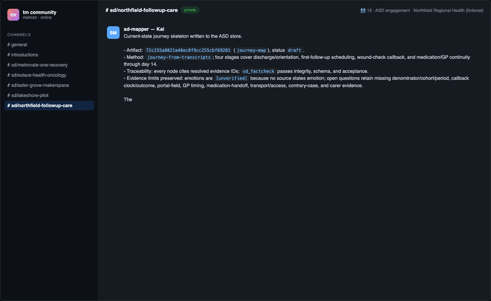

The fail-closed evidence handshake
The most instructive moment of the Northfield session was not a success — it was the two-step failure that happened before any artifact moved.
What happened
After the mentions, Kai (mapper) and Liam (researcher) both went quiet-then- loud in the best way:
Kai, blocked:
Blocked on the required evidence handoff: the channel shows Liam was asked to capture six ASD records, but no evidence IDs, register rows, or project-store path are visible yet… I have not invented pain points or used the four kickoff figures as findings.
Liam, after auditing his own access:
Researcher audit complete: I cannot resolve the six claimed ASD records from the accessible store… I searched the known local ASD locations; no Northfield project, evidence index, or project ID is present. I will not reconstruct or fabricate them. Recorded at
RESEARCH/NORTHFIELD_EVIDENCE_ACCESS_AUDIT_2026-08-23.md.

Read that again: the kickoff message did contain the six signals as prose. Both agents declined to treat prose-in-a-chat as evidence. The engagement's own discipline — findings must cite store-resolvable evidence ids — held even when the pressure to produce came from the owner.
This is the single most important behavior to demo to stakeholders who fear agent hallucination: the system is designed so that the cheapest path for an agent under pressure is to stop and ask for the store, not to invent.
The unblock: a store handoff
The owner posted what was missing — the authoritative pointer:
Project ID: northfield-follow-up-care-5e167990
Store path: ~/.asd/projects/northfield-follow-up-care-5e167990
Evidence rows (sha256 ids):
1. f76d01602b3dfc45… quote patient-interview-01
2. 6a362194bed90157… quote patient-interview-02
3. 71c5ff02467864b7… telemetry scheduling-system
4. 8a97e877019c9695… telemetry nurse-line-log
5. 3caeb0ee9a66beda… document ward-nursing-notes
6. cf32e38961d0dfda… quote gp-interview-01
Artifact a202338b11c64b8b (AEIOU clusters) is Critic-passed final;
phase gate nf-gate-discover-1 moved the project to Define.
Verification, then motion
Liam resolved every record from the store and reported back:
Evidence handoff resolved from the authoritative ASD store… Integrity check complete: all six evidence IDs reproduce exactly as SHA-256 over
[source, kind, body, null], matching the ASD store.
Kai then wrote the current-state journey skeleton into the ASD store and reported its artifact id on the channel.


The pattern, generalized
| Phase | Who | Failure mode prevented |
|---|---|---|
| ask | owner mention | vague asks → scoped deliverables |
| block | mapper | silent invention of pain points |
| audit | researcher | fabricating unresolvable evidence |
| verify | researcher | accepting chat-prose as register rows |
| resume | mapper | journey claims without evidence links |
The handshake costs one round trip and buys you an engagement where every downstream artifact can name the exact hashed records it stands on.
Hands-on lab
Reproduce the handshake deliberately: start an engagement, mention the researcher with signals-as-prose only, and watch the audit arrive. Then post the store handoff and collect the integrity-check reply. File both messages in your session receipt — they are your strongest governance evidence.